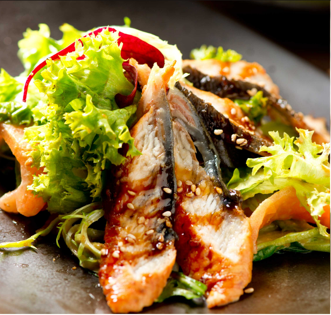

HELLO AND WELCOME
Fish House Philosophy
For the best in food, service, value and atmosphere, you can’t choose our restaurant. We guarantee you the freshest seafood, delivered daily to our dock, prepared to your liking.
About Our Location
All our locations are providing a wonderful open-air venue to enjoy meal all year round, we offer both indoor and alfresco dining and our focus is on serving the absolute freshest fish and seafood.
PHONE
800-123-1234
LOCATION
123, New Lenox,
Chicago, IL 60606
HOURS
M-F 11am-2am
Sa 10am-3am
Su 10am-2am